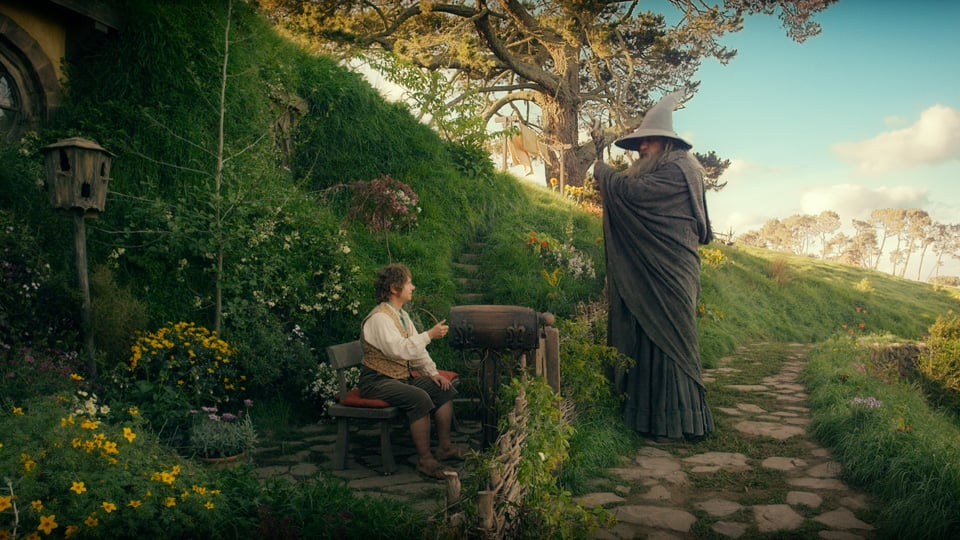

Numa toca no chão vivia um hobbit. Não uma toca desagradável, suja e úmida, cheia de restos de minhocas e com cheiro de lodo; tampouco uma toca seca, vazia e arenosa, sem nada em que sentar ou o que comer: era a toca de um hobbit, e isso quer dizer conforto. A toca tinha uma porta perfeitamente redonda como uma escotilha, pintada de verde, com uma maçaneta brilhante de latão amarelo exatamente no centro. A porta se abria para um corredor em forma de tubo, como um túnel: um túnel muito confortável, sem fumaça, com paredes revestidas e com o chão ladrilhado e atapetado, com cadeiras de madeira polida e montes e montes de cabides para chapéus e casacos - o hobbit gostava de visitas. O túnel descrevia um caminho cheio de curvas, afundando bastante, mas não em linha reta, no flanco da colina - A Colina, como todas as pessoas num raio de muitas milhas a chamavam -, e muitas portinhas redondas se abriam ao longo dele, de um lado e do outro. Nada de escadas para o hobbit: quartos, banheiros, adegas, despensas (muitas delas), guarda-roupas (ele tinha salas inteiras destinadas a roupas), cozinhas, salas de jantar, tudo ficava no mesmo andar, e, na verdade, no mesmo corredor. Os melhores cômodos ficavam todos do lado esquerdo (de quem entra), pois eram os únicos que tinham janelas, janelas redondas e fundas, que davam para o jardim e para as campinas além, que desciam até o rio. Esse hobbit era um hobbit muito abastado, e seu nome era Bolseiro.
